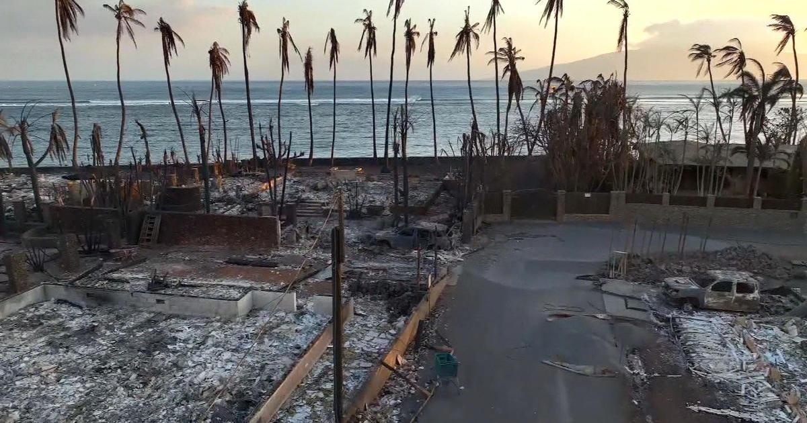

'I really want my home to rebuild': BU student helping people of Maui after devastating firesBOSTON - Boston University Student Noelle Lo fights back tears as she describes the devastation taking place just 20 minutes away from her home in Maui. "What was once was home is burnt to the ground and all you can do is be thankful you are alive, I mean I am still searching for people," Lo said. Lo is a rising sophomore at BU and was born and raised in Maui her whole life. She was home for the summer doing an internship when the wildfires broke out. Now she's volunteering at her former high school which has been transformed into a temporary shelter. "I've been helping with food and medical needs," Lo said. She is also helping family members reunite with love ones. "For the past two days I could see the fires from my house. The people coming into the shelters. I've seen burn victims. I know one family they found their grandparents in their car, and you really don't realize how much you take advantage of this life," Lo said. Wearing his Hawaii t-shirt, New England Patriots linebacker Jahlani Tavai says he has a lot of family and friends who lost their homes and is trying to raise awareness. Tavai played college football in Hawaii and wants to let Patriots fans know how they can help. "I am trying to get a lot of donations, clothes, diapers and whatever we can get our hands on to send out there as much as I can do, I am going to do," Tavai said. Red Cross of Massachusetts is also sending out volunteers to work in shelters and helping families reunite with their family members. "Right now, the immediate need is with sheltering and the feeding that goes with that. So, the Red Cross does have several shelters that are running. This is a tragic situation and when you see the video comes in it breaks your heart," Red Cross Communications Director Kelly Isenor said. Lo says she plans to return back to BU in two weeks and is actually working with the school to find more ways to give back. But for now, she is dedicating the rest of her summer to help the people of Maui. "We have lost our history, our community, our homes. In days it is burnt to the ground. We have lost people. It's so devastating but I really want my home to rebuild, I want her to flourish again because a lot of us have lost our sprit due to this," Lo said. For more on how to help those affected by the Maui wildfires, click . for more features. |
 |